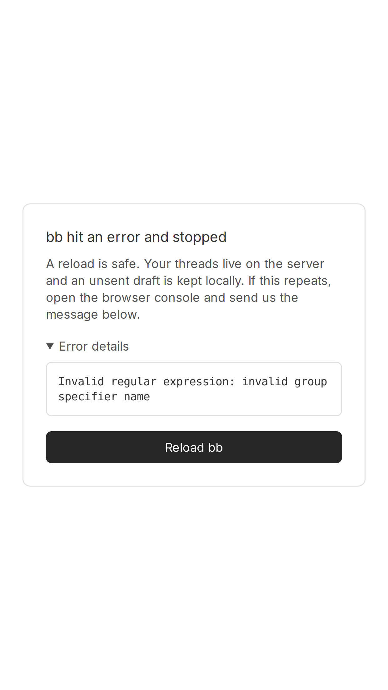
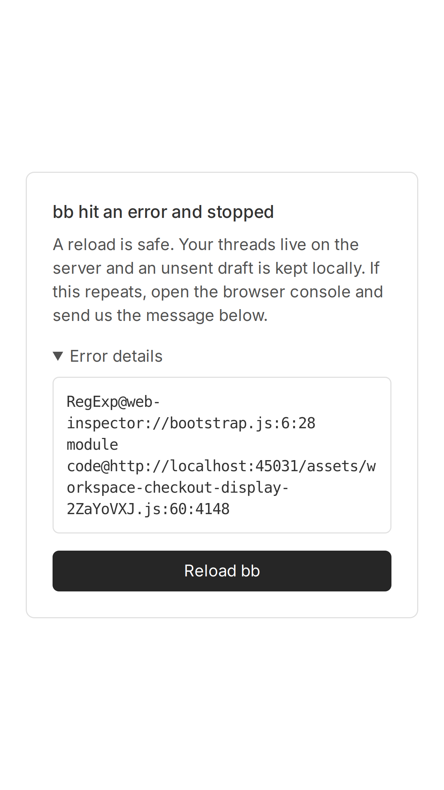
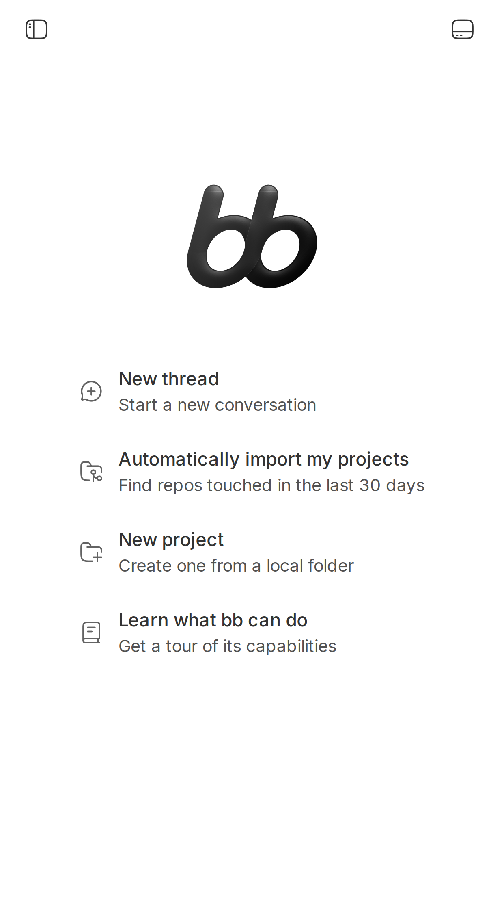

#1603 · Mobile Remote Access Template - UI/UX Hidden Due to Responsiveness Issues
TL;DR
Plain-language framing. bb's web UI is a single-page React app served by bb-server. On phones you open the same app in Safari (or Arc, which on iOS is a thin wrapper around the same WebKit engine). "Remote access" is the bb settings page for reaching your bb from another device; there is no separate "mobile template" — the reporter is describing the normal web app opened on an iPhone 8 Plus. That phone tops out at iOS 16.7, i.e. Safari 16.x.
What the user sees. The page loads, the app shell flashes for about a second (sidebar toggle button, "New thread", "Settings" …), then everything is replaced by a mostly blank page. Depending on scroll position the only thing visible is a white card in the middle saying "bb hit an error and stopped" (or, if the card is off-screen, nothing at all). No controls are usable. This is not a CSS/responsive-layout problem: the CSS is fine on that engine (verified: color-mix, dvh, @container, :has() all supported; the CSS bundle contains no real nesting).
What is actually wrong. The production JavaScript bundle cannot be parsed/evaluated by any Safari 16.x engine, and the failure happens in the chunk that backs the home route (SplitWorkspaceRoute → workspace-checkout-display-*.js), so React's lazy route throws and the app-level error boundary replaces the whole UI. Two independent causes, both in third-party code:
- Safari 16.0–16.3: three regex literals with lookbehind (
/(?<=\n)/from@pierre/diffs, used twice, and the email matcher frommdast-util-gfm-autolink-literalviaremark-gfm) make the chunk fail to parse ("Invalid regular expression: invalid group specifier name"). Lookbehind shipped in Safari 16.4. - Safari 16.4–16.6 (iOS 16.4–16.7, i.e. an up-to-date iPhone 8 Plus): the bundler (Vite 8 = rolldown) constant-folds the runtime feature detection in
oniguruma-to-es(Shiki's JS regex engine, pulled in by@pierre/diffs) fromtry { new RegExp("[[]]","v") } catch { return false } return trueto plaintrue. The very next top-level statement,RegExp("[[^a]]","v").test("a"), then executes unconditionally and throws "Invalid flags supplied to RegExp constructor." on every engine without thevflag (Safari < 17.0). The library would have degraded gracefully; the bundler removed the guard.
Vite 8's default build.target is safari16.4/ios16.4, so bb nominally supports iOS 16.4+, but because of (2) the effective floor is iOS 17. Nothing in bb tells the user this; they just get a crash. Both causes are demonstrated below on real WebKit builds emulating an iPhone 8 Plus, and the app boots on the Safari-16.0-era engine once exactly those two things are patched out of the served bundle.
Claims vs findings
| Claim (issue text) | Status | Evidence |
|---|---|---|
| Page loads, then all UI elements become hidden/broken (iPhone 8 Plus, Arc and Safari) | Verified | WebKit 16.0-era engine, iPhone 8 Plus emulation: shell renders at load, error boundary replaces it after ~1.5 s (load → settled; log webkit160-prod-home-rerun.log). Same on a Safari-16.4-like engine (no v flag): screenshot, log webkit164-no-vflag.log. Arc on iOS uses the OS WebKit, so "both browsers" is expected. |
Caused by responsive CSS: media queries, viewport meta, flex/grid, z-index, display:none | Refuted | Root cause is a JavaScript parse/evaluation failure in a route chunk (stack: Lazy → Suspense → main, error SyntaxError). CSS feature probe on the failing engine: color-mix/oklch/dvh/@container/:has() all supported (webkit160-prod-home.log, "supports"); the CSS bundle's 180 & are escaped Tailwind class names, not CSS nesting. |
| Severity "Critical — completely blocks mobile users" | Partly | Blocks every iOS 16.x device (Safari 16.0–16.6). iOS 17+ and Playwright's WebKit trunk build with the v flag load fine (screenshot). The iPhone 8 Plus can never go past iOS 16.7, so for that device it is total. |
| "Likely affects all mobile devices" | Refuted | Engine-version specific: any WebKit with lookbehind and the RegExp v flag (Safari/iOS 17+) works. Desktop Safari 16.x is affected the same way. |
| There is a "mobile remote access template" | Unverified / misnomer | No such artifact in the repo. "Remote access" is a settings section (apps/app/src/views/… settings routes); the reporter opened the ordinary web app on a phone. |
| iOS/browser versions | Not provided | Placeholders left in the issue. The two failure modes cover the whole iOS 16.x range the device can run, so the exact version only changes the error text. |
{kind=link}
{kind=link}
{kind=link}
{kind=link}
Environment
| bb | 16ceb3a540f81c1189efaffb27a39b1d9443abf5 (main); no later commit on origin/main touches apps/app/vite.config.ts, apps/app/package.json or the deps involved (git log 16ceb3a54..origin/main -- … empty) |
| Host | Linux 7.0.0-29-generic, Node v24.18.0, pnpm workspace; Vite 8.0.12 (rolldown 1.0.0, oxc minifier), @pierre/diffs 1.2.9, shiki/@shikijs/engine-javascript 3.23.0, oniguruma-to-es 4.3.4, regex 6.1.0, remark-gfm 4 → mdast-util-gfm-autolink-literal 2.0.1 |
| App under test | Packaged launcher node packages/bb-app/dist/bb-app.js --data-dir /tmp/bb-1603-proddata --server-port 45031 --host-daemon-port 45032 (production build of apps/app, served from packages/bb-app/app/dist with precompressed .br/.gz). Data dir deleted afterwards. |
| Browsers | Playwright WebKit builds emulating devices["iPhone 8 Plus"] (414×736 CSS px, DPR 3, iOS UA, touch):• webkit-1724 (Playwright 1.27.1) — Safari 16.0-era JSC: no lookbehind, no class static blocks, no v flag (probe)• webkit-1837 (Playwright 1.33.0) — Safari 16.4-era WebKit trunk: has lookbehind and, unlike shipping Safari 16.4–16.6, already has the v flag (probe); Safari 16.4–16.6 is simulated on it by making the RegExp constructor reject flag v (see step 5).Old builds run on this Ubuntu 26.04 host via the harness built by setup-harness.sh (see "Harness setup" below) and driven by run-old-webkit160.sh / run-webkit164.sh. |
Minimal reproduction
Everything below is against the pristine build at the base commit. Scripts live in 1603/repro/; R=/tmp/bb-reports/issues/1603/repro in the commands. Every script is invoked by absolute path from any cwd.
0. Harness setup (old WebKit engines on a modern Linux, no root)
Cause 1 needs a Safari-16.0-era JavaScriptCore; Playwright still hosts webkit-1724 (Playwright 1.27.1) and webkit-1837 (Playwright 1.33.0, Safari 16.4-era). Those builds were compiled for Ubuntu 22.04, so on a newer distro their shared libraries have to be supplied by hand. setup-harness.sh does all of it: npm i playwright@1.27.1 acorn acorn-walk into $HARNESS, npm i playwright@1.33.0 into $HARNESS/pw132, npx playwright install webkit for both, apt-get download of 27 host-distro packages (newer sonames) + 6 jammy-only packages from archive.ubuntu.com (libicu70 libpcre3 libsoup2.4-1 libvpx7 libwoff1 libxml2; the exact list is in the script), dpkg-deb -x into $HARNESS/root/oldroot, copy the .so files into each build's minibrowser-wpe/sys/lib, move the bundled glib 2.70 aside, then smoke-launch both engines.
# default target: /tmp/bb-1603-wk + ~/.cache/ms-playwright. Override with BB1603_HARNESS / PLAYWRIGHT_BROWSERS_PATH. bash /tmp/bb-reports/issues/1603/repro/setup-harness.sh # ~4 min, ~2 GB # proof it works from nothing (separate dir + separate browser cache, logged): bash /tmp/bb-reports/issues/1603/repro/setup-harness-fresh-test.sh # → 1603/setup-harness-fresh.log
Actual, from-scratch run into /tmp/bb-1603-wk-fresh (full log, 3 min 40 s):
playwright@1.27.1 webkit rev 1724 playwright@1.33.0 webkit rev 1837 == 2. download the two WebKit builds /tmp/bb-1603-wk-fresh/browsers/webkit-1724 /tmp/bb-1603-wk-fresh/browsers/webkit-1837 == 3b. jammy-only packages … ok libicu70 -> pool/main/i/icu/libicu70_70.1-2_amd64.deb ok libpcre3 -> pool/main/p/pcre3/libpcre3_8.39-13build5_amd64.deb ok libsoup2.4-1 -> pool/main/libs/libsoup2.4/libsoup2.4-1_2.74.2-3_amd64.deb ok libvpx7 -> pool/main/libv/libvpx/libvpx7_1.11.0-2ubuntu2_amd64.deb ok libwoff1 -> pool/main/w/woff2/libwoff1_1.0.2-1build4_amd64.deb ok libxml2 -> pool/main/libx/libxml2/libxml2_2.9.13+dfsg-1build1_amd64.deb == 4. … prepared /tmp/bb-1603-wk-fresh/browsers/webkit-1724/minibrowser-wpe (332 files in sys/lib) == 5. smoke test both engines Mozilla/5.0 (Macintosh; …) AppleWebKit/605.1.15 (KHTML, like Gecko) Version/16.0 Safari/605.1.15 | lookbehind: no | v flag: no Mozilla/5.0 (Macintosh; …) AppleWebKit/605.1.15 (KHTML, like Gecko) Version/16.4 Safari/605.1.15 | lookbehind: yes | v flag: yes exit=0
The two runners run-old-webkit160.sh (webkit-1724) and run-webkit164.sh (webkit-1837) take the script as an absolute path (they copy it next to the right node_modules so import "playwright" resolves to the right version) and set the env the old builds need (PLAYWRIGHT_SKIP_VALIDATE_HOST_REQUIREMENTS, __EGL_VENDOR_LIBRARY_DIRS, LIBGL_ALWAYS_SOFTWARE). Cause 2 alone (step 5) needs no old engine at all: any Playwright WebKit plus the RegExp-wrapping init script in wk-load-no-vflag.mjs reproduces it.
1. Build and start the packaged app on isolated ports
pnpm install --frozen-lockfile --prefer-offline pnpm exec turbo run build bash /tmp/bb-reports/issues/1603/repro/start-prod-app.sh "$PWD" # → up: http://localhost:45031 (ports 45031/45032, data dir /tmp/bb-1603-proddata)
2. Prove the engine lacks the features (no bb involved)
bash $R/run-old-webkit160.sh $R/wk-feature-probe.mjs # webkit-1724, Safari 16.0-era bash $R/run-webkit164.sh $R/wk-feature-probe.mjs # webkit-1837, Safari 16.4-era (control)
Actual (full log):
"regex lookbehind /(?<=\\n)/ (from @pierre/diffs)" → SyntaxError: Invalid regular expression: invalid group specifier name
"regex lookbehind + \\p{P} /gu (from mdast-util-gfm-autolink-literal)" → SyntaxError: Invalid regular expression: invalid group specifier name
"class static block" → SyntaxError: Unexpected token '{'
"Element.checkVisibility" → TypeError (guarded in the bundle, harmless)
css: colorMix true, nesting false, registerProperty false, dvh true
Same probe on webkit-1837: lookbehind ok, static blocks ok, v flag ok (log). regex-check-wk160.log / regex-check-wk164.log compile the exact patterns from the bundle in both engines.
3. Load the app as an iPhone 8 Plus on the Safari 16.0-era engine — crash
bash $R/run-old-webkit160.sh $R/wk-load-and-wait.mjs http://localhost:45031 /tmp/bb-reports/issues/assets/1603-wk160-prod 20000
Expected: home screen (sidebar, "New thread", "Start a new conversation" …). Actual (log):
after load: {"text":"New thread Extensions Settings Report a bug Toggle Sidebar","errorBoundary":false,"buttons":8}
error boundary visible after ~1757 ms: {"text":"bb hit an error and stopped A reload is safe. …","errorBoundary":true,"buttons":1}
error details:
Invalid regular expression: invalid group specifier name
[console.warning] plugin runtime load failed: Invalid regular expression: invalid group specifier name
[console.error] [bb] the app crashed SyntaxError: Invalid regular expression: invalid group specifier name
Lazy@unknown:0:0
On@…/assets/atomFamily-SooyRm32.js:3:4081
Kn@…/assets/atomFamily-SooyRm32.js:3:8752
Suspense@unknown:0:0
main@unknown:0:0
load: only the sidebar-toggle icon of the shell is painted; the route chunk is still being fetched.
4. Pin the failing regexes to their source modules
A=$PWD/packages/bb-app/app/dist/assets bash $R/run-old-webkit160.sh $R/webkit-find-bad-regex.mjs http://localhost:45031 $A/workspace-checkout-display-*.js $A/worker-portable-*.js # parses each chunk with acorn, compiles every literal in the old engine
== worker-portable-DaFcwpf8.js: 111 regexes, 1 rejected
@795245 /(?<=\n)/ …let Qc=/(?<=\n)/,$c={dark:`pierre-dark`,light:`pierre-light`}… ← @pierre/diffs dist/constants.js:15 SPLIT_WITH_NEWLINES
== workspace-checkout-display-2ZaYoVXJ.js: 505 regexes, 2 rejected
@12092 /(?<=\n)/ …ka=/(?=^diff --git)/gm,…,ja=/(?<=\n)/… ← @pierre/diffs (same constant, second copy)
@1638057 /(?<=^|\s|\p{P}|\p{S})([-.\w+]+)@([-\w]+(?:\.[-\w]+)+)/gu …autolinkEmail… ← mdast-util-gfm-autolink-literal lib/index.js:135
Chunk graph (chunk-importers.out): workspace-checkout-display is imported by SplitWorkspaceRoute (the catch-all home route), ToolsView, bb-logo, plugin-frontend and (dynamically) index; worker-portable by SplitWorkspaceRoute. So the home route and the plugin runtime ("plugin runtime load failed") both die.
5. Simulate an up-to-date iPhone 8 Plus (Safari 16.4–16.6: lookbehind yes, v flag no) — still crashes, different message
bash $R/run-webkit164.sh $R/wk-load-no-vflag.mjs http://localhost:45031/ /tmp/bb-reports/issues/assets/1603-wk164-novflag 12000 bash $R/run-webkit164.sh $R/wk-load-and-wait.mjs http://localhost:45031/ /tmp/bb-reports/issues/assets/1603-wk164-prod 12000 # control, native v flag
The script only wraps window.RegExp so that constructor calls with flag v throw exactly Safari 16.x's error; regex literals are untouched. Actual (log):
engine v-flag support (native): yes # trunk build; wrapper removes it
after load: {"text":"New thread Extensions Settings Report a bug Toggle Sidebar","errorBoundary":false}
error boundary after ~1000 ms
error details:
RegExp@…
module code@http://localhost:45031/assets/workspace-checkout-display-2ZaYoVXJ.js:60:4148
[console.error] [bb] the app crashed SyntaxError: Invalid flags supplied to RegExp constructor.
Lazy@unknown:0:0 … Suspense@unknown:0:0
workspace-checkout-display-2ZaYoVXJ.js:60:4148 is this top-level code (bundled oniguruma-to-es + regex):
var Bd=String.fromCodePoint,Vd=String.raw,Hd={flagGroups:!0,unicodeSets:!0};
Hd.bugFlagVLiteralHyphenIsRange=Hd.unicodeSets?(()=>{try{new RegExp(Vd`[\d\-a]`,`v`)}catch{return!0}return!1})():!1,
Hd.bugNestedClassIgnoresNegation=Hd.unicodeSets&&RegExp(`[[^a]]`,`v`).test(`a`); ← throws on Safari < 17

v flag), pristine bundle: same blank page + error card. The "Error details" box shows the stack (RegExp@web-inspector://bootstrap.js:6:28 / module code@…/workspace-checkout-display-2ZaYoVXJ.js:60:4148, i.e. a RegExp constructor call at module top level); the message itself, "Invalid flags supplied to RegExp constructor.", is in the console log (log).
v flag (≈ Safari/iOS 17+): home screen renders, 20 buttons, no errors.6. Show the bundler folded the guard (unit-level repro of cause 2)
fold-in.js is the exact shape of oniguruma-to-es/src/utils.js; fold-check.mjs bundles it with the repo's rolldown 1.0.0:
node /tmp/bb-reports/issues/1603/repro/fold-check.mjs "$PWD"
--- rolldown minify=false:
const envFlags = { unicodeSets: true };
envFlags.bug = envFlags.unicodeSets && (/* @__PURE__ */ new RegExp("[[^a]]", "v")).test("a");
--- rolldown minify=true:
const e={unicodeSets:!0};e.bug=e.unicodeSets&&RegExp(`[[^a]]`,`v`).test(`a`),…
Expected: the try { new RegExp(…, "v") } catch { return false } probe survives (constructing a RegExp with unsupported flags throws, so it is not side-effect free). Actual: rolldown treats new RegExp(literal, literal) as pure, deletes it, and folds the IIFE to true — even with minification off. Full output: fold-check.out. The shipped bundle contains the folded form (Hd={flagGroups:!0,unicodeSets:!0}) in both workspace-checkout-display and worker-portable.
7. Counter-experiment: patch exactly those two things → the app boots on the Safari 16.0-era engine
# all-in-one (moves the .br/.gz siblings aside, patches, restarts bb-app, loads on webkit-1724, restores, restarts): bash $R/step7-counter-experiment.sh "$PWD" # which is: # node $R/patch-lookbehind-experiment.mjs packages/bb-app/app/dist/assets --unfold # 3 lookbehind literals → non-lookbehind; folded envFlags → real try/catch # (restart bb-app; it serves packages/bb-app/app/dist and prefers the .br/.gz siblings, so those are moved aside first) # bash $R/run-old-webkit160.sh $R/wk-load-and-wait.mjs http://localhost:45031/ …/1603-wk160-prod-patched 15000 # node $R/patch-lookbehind-experiment.mjs packages/bb-app/app/dist/assets restore
after load: {"text":"New thread Extensions Settings Report a bug Toggle Sidebar","errorBoundary":false,"buttons":8}
final: {"text":"New thread Extensions Automations Threads No threads Settings Remote access Report a bug New thread Start a new conversation …","errorBoundary":false,"buttons":20}
--- console errors / page errors ---
[console.error] Viewport argument key "interactive-widget" not recognized and ignored. # only this (harmless)

The patched files were restored afterwards (… restore); the worktree is clean.
Root cause
Mechanism
App.tsx#L78 lazy-loads SplitWorkspaceRoute, which is the catch-all route (#L325) rendered inside a single <Suspense> under AppLayout. Its module graph statically includes git-diff-parsing.ts (@pierre/diffs, which pulls in Shiki's JS engine oniguruma-to-es/regex) and markdown-preview.tsx (remark-gfm → mdast-util-gfm-autolink-literal). Rolldown puts all of that into workspace-checkout-display-*.js (and the diff worker into worker-portable-*.js, referenced from diff-worker-pool.ts#L20).
When that chunk fails to parse (cause 1) or to evaluate (cause 2), the dynamic import() rejects, React's lazy throws during render, and AppErrorBoundary swaps the whole tree for the "bb hit an error and stopped" card. The plugin runtime, which imports the same chunk, logs "plugin runtime load failed" and gives up. That is the "loads, then everything disappears" the reporter describes.
Cause 1 — regex lookbehind literals (Safari 16.0–16.3)
@pierre/diffs1.2.9dist/constants.js:15:const SPLIT_WITH_NEWLINES = /(?<=\n)/;— bundled twice (main chunk + portable worker).mdast-util-gfm-autolink-literal2.0.1lib/index.js:135:/(?<=^|\s|\p{P}|\p{S})([-.\w+]+)@([-\w]+(?:\.[-\w]+)+)/gu.
Regex literals are validated by JSC at parse time (verified: wk-lazy-parse-check.mjs — even a literal inside a never-called inner function makes new Function throw), so a single unsupported literal anywhere in an 800 KB chunk rejects the whole module. Lookbehind cannot be transpiled; the only options are patching/replacing the dependencies or declaring iOS < 16.4 unsupported (which Vite's default target already implies).
Cause 2 — rolldown constant-folds the oniguruma-to-es feature detection (Safari 16.4–16.6, and any engine without the RegExp v flag)
apps/app/vite.config.ts uses Vite 8 (rolldown) with default build.target (= safari16.4/ios16.4, checked in vite/dist/node/chunks/logger.js). Rolldown's side-effect analysis marks new RegExp(<string literal>, <string literal>) as pure, so it drops the probe out of the try block and folds envFlags.unicodeSets/flagGroups to true (step 6; it does this with minify:false too, so it is the bundler, not the minifier). The next top-level statement in the library, envFlags.bugNestedClassIgnoresNegation = envFlags.unicodeSets && new RegExp("[[^a]]","v").test("a"), is not pure (its result is used) and is kept — but now runs unguarded on every engine. Safari added the v (unicodeSets) flag in 17.0; iOS 16.x, which is all an iPhone 8 Plus can run, throws "Invalid flags supplied to RegExp constructor." at chunk evaluation. Same folding for flagGroups ((?i:) modifiers, not supported by either WebKit build I have) means oniguruma-to-es will also pick target ES2025 and can emit modifier syntax at highlight time on engines that lack it — a secondary, runtime-only hazard on Safari 17.x that I did not chase.
Note this is invisible in vite dev (deps are prebundled by esbuild, which keeps the try/catch) and in Playwright's WebKit trunk builds (which already had v), which is presumably why it went unnoticed.
Deeper issue
bb has no declared browser floor and no early "unsupported browser" gate: index.html goes straight into the module bundle. Any parse/eval failure in a route chunk becomes a generic crash card with a message no user can act on. Vite 8's baseline (ios16.4) also silently drifted from what the bundle actually needs (iOS 17), and nothing in CI checks the built output against a target engine.
Proposed fix (first principles)
- Un-fold the guard (fixes iOS 16.4–16.7 / Safari 16.4–16.6, the realistic iPhone 8 Plus case). Either (a) upstream/report to rolldown that
new RegExp(...)is not pure (it throws on unsupported syntax/flags), or, immediately, (b)pnpm patch oniguruma-to-es(andregex, which has the same pattern) so the probes are opaque to the bundler — e.g.const R = globalThis.RegExp; try { new R("[[]]", "v") } …orReflect.construct(RegExp, ["[[]]", "v"])— or (c) disable the pure-annotation for that module via rolldown'streeshake.moduleSideEffects/no-treeshake for the two packages. Verify with the step-5 script (wk-load-no-vflag.mjs) which fails today. Risk: patching a transitive dep must be redone on upgrades; a small vitest that scansapps/app/dist/assets/*.jsforunicodeSets:!0/flagGroups:!0(like the existing bundle-stats budget check) would guard it. - Decide the floor for lookbehind (iOS 16.0–16.3). Cheapest: declare iOS 16.4+ (Vite's own baseline) as the floor. If iOS 16.0–16.3 matters, patch
@pierre/diffs(SPLIT_WITH_NEWLINES→ e.g.text.match(/[^\n]*\n|[^\n]+$/g)) andmdast-util-gfm-autolink-literal(replace the lookbehind with a leading capture group and adjust the match offset) viapnpm patch. Both are upstreamable. - Fail loudly and early instead of blank. Add a tiny ES5 inline script in
apps/app/index.htmlthat probes the features the bundle actually needs (new RegExp("(?<=a)b"),new RegExp("[[]]","v")until fix 1 lands, class static blocks vianew Function("class A{static{}}")) and, on failure, renders a static "bb needs iOS 17 / Safari 17 or newer" notice before the module bundle loads. Also makeAppErrorBoundaryrecogniseSyntaxErrors from chunk loading and say "your browser is too old" rather than "a reload is safe". Risk: none functionally; keep the probe in atry/catchso it can never itself break modern browsers. - Guard in CI. Run one Playwright WebKit smoke on the built app (Playwright's WebKit is trunk, so pair it with the
v-flag-rejecting init script from step 5 to emulate the oldest supported Safari), or at minimum a static scan ofdist/assetsfor the folded probe and for lookbehind literals outside Shiki grammar strings.
Related issues
- #1063 (closed) — "Mobile lag: Shiki grammar registry bundles 2.3MB of JS into workspace-checkout-display": same chunk; the Shiki JS engine that carries cause 2 is what that issue was about.
- #1616 — iOS Safari performance audit (perf, not correctness; unrelated mechanism).
- #871 (closed) — iOS standalone PWA shell sizing; genuinely a CSS/viewport issue, unlike this one.
- #1449 — request for an official mobile app.
Appendix
Artifacts
- Harness: setup-harness.sh (from scratch), setup-harness-fresh-test.sh → setup-harness-fresh.log, fetch-jammy.sh, setup-old-webkit.sh (older per-build variant)
- Runners: run-old-webkit160.sh, run-webkit164.sh, start-prod-app.sh, stop-prod-app.sh, rerun-fresh-harness.sh (steps 2–5 in one go), step7-counter-experiment.sh
- Probes: wk-feature-probe.mjs, wk-regex-check.mjs, wk-lazy-parse-check.mjs
- App loads: wk-load-and-wait.mjs, wk-load-no-vflag.mjs, webkit-iphone8plus.mjs, webkit-walkthrough.mjs
- Bundle forensics: webkit-find-bad-chunk.mjs, webkit-find-bad-regex.mjs, webkit-trap-regexp.mjs, webkit-script-error-pos.mjs, webkit-bisect-statements.mjs, chunk-importers.mjs, scan-js.sh (out), scan-css.sh, find-lookbehind.sh
- Cause 2: fold-in.js, fold-check.mjs → fold-check.out; patch-lookbehind-experiment.mjs
- Logs: webkit160-prod-home-rerun.log, webkit164-prod-home-rerun.log, webkit164-no-vflag.log, webkit160-prod-patched.log, webkit160-bad-chunks.log (76 of 435 chunks fail on 16.0: 6 with the regex error, 70 lazy Mermaid chunks with
static {}), webkit160-bad-regex.log, webkit160-bad-chunks-patched.log, chunk-importers.out, earlier-attempt walkthrough logs wk160 / wk164 (settings → remote access → thread all work on thev-capable engine). - Screenshots (all
assets/1603-*.png): wk160 prod load/settled, wk164 prod load/settled, wk164-novflag load/settled, wk160-prod-patched load/settled, plus the earlier attempt's dev-server and walkthrough shots (wk164-01…06, chromium controls).
Bundle scan summary (iOS-16-relevant APIs, apps/app/dist/assets)
lookbehind literals outside Shiki grammar strings : worker-portable ×1, workspace-checkout-display ×2 (see step 4)
folded oniguruma-to-es envFlags {flagGroups:!0,unicodeSets:!0}: worker-portable, workspace-checkout-display
class static blocks (Safari < 16.4) : only lazy Mermaid diagram chunks (loaded when a mermaid block is rendered)
Element.checkVisibility (Safari 17.4) : atomFamily chunk, guarded by typeof check
URLSearchParams.size (Safari 17.0) : react-router data-request path, not hit on load
CSS : no nesting, @property only for Tailwind animation vars (progressive), color-mix/oklch supported since 16.2/15.4
Commands run (abridged)
gh api repos/get-bb/bb/issues/1603 --jq .body git checkout 16ceb3a54 && pnpm install --frozen-lockfile --prefer-offline && pnpm exec turbo run build git fetch origin main && git log --oneline 16ceb3a54..origin/main -- apps/app/vite.config.ts apps/app/package.json pnpm-lock.yaml apps/app/index.html apps/app/src/main.tsx grep -rn "(?<[=!]" apps/app/src packages/*/src # bb-authored code has no lookbehind grep -rn "(?<=" node_modules/.pnpm/@pierre+diffs*/…/dist/constants.js node_modules/.pnpm/mdast-util-gfm-autolink-literal*/…/lib/index.js sed -n 1,30p node_modules/.pnpm/oniguruma-to-es@4.3.4/node_modules/oniguruma-to-es/dist/esm/index.js # unfolded source bash repro/start-prod-app.sh "$PWD" ; … (steps 2–7) … ; kill <pid>; rm -rf /tmp/bb-1603-proddata # revision: bash repro/setup-harness-fresh-test.sh # from-scratch harness into /tmp/bb-1603-wk-fresh BB1603_HARNESS=/tmp/bb-1603-wk-fresh PLAYWRIGHT_BROWSERS_PATH=/tmp/bb-1603-wk-fresh/browsers bash repro/rerun-fresh-harness.sh "$PWD" BB1603_HARNESS=/tmp/bb-1603-wk-fresh PLAYWRIGHT_BROWSERS_PATH=/tmp/bb-1603-wk-fresh/browsers bash repro/step7-counter-experiment.sh "$PWD" bash repro/stop-prod-app.sh ; rm -rf /tmp/bb-1603-wk-fresh
Verification
An independent verifier followed steps 1–7 in a separate worktree at 16ceb3a54 (fresh pnpm install + turbo build; identical chunk hashes workspace-checkout-display-2ZaYoVXJ.js / worker-portable-DaFcwpf8.js) and reproduced every step: feature probe (lookbehind and static blocks rejected on webkit-1724), the iPhone 8 Plus crash after ~1.4 s with "Invalid regular expression: invalid group specifier name", the acorn scan finding exactly the three regexes at the same byte offsets, the "Invalid flags supplied to RegExp constructor." crash at …:60:4148 with the v-flag-rejecting init script (control on the same engine renders 20 buttons), rolldown 1.0.0 folding the try/catch to unicodeSets: true with minify on and off, and the patched bundle booting on the Safari-16.0-era engine. All code claims (App.tsx L78/L325, diff-worker-pool.ts L20, git-diff-parsing.ts L1, markdown-preview.tsx L39, @pierre/diffs 1.2.9 constants.js:15, mdast-util-gfm-autolink-literal 2.0.1 lib/index.js:135, oniguruma-to-es 4.3.4 / regex 6.1.0 probes, Vite 8.0.12 default target, folded Hd={flagGroups:!0,unicodeSets:!0} in both chunks) checked out, and nothing on origin/main through 71f52fe0a touches the relevant files. Verifier artifacts: 1603/verify/.
Findings and what changed in this revision:
- Major — harness not reproducible from the report. The old-WebKit harness lived only in
/tmp/bb-1603-wk: the runner scriptscd'd there, only worked with scripts named relatively (an absolute path failed withERR_MODULE_NOT_FOUND: Cannot find package 'playwright'), and the npm/Playwright/apt package lists were never recorded. Fixed by re-doing it, not by rewording: new setup-harness.sh builds the whole harness from nothing (exact npm versions,npx playwright install webkit, the 27 + 6 package names, lib layout, glib workaround, smoke test); setup-harness-fresh-test.sh ran it into a brand-new dir with a brand-new browser cache (log, exit 0, 3 min 40 s); run-old-webkit160.sh / run-webkit164.sh now accept absolute script paths and honourBB1603_HARNESS/PLAYWRIGHT_BROWSERS_PATH; fetch-jammy.sh is now inrepro/. Then steps 2–5 and 7 were re-run through that fresh harness with every script called by absolute path from/(rerun-fresh-harness.sh, step7-counter-experiment.sh; output fresh-harness-rerun.log, fresh-harness/ logs + screenshots): identical results — probe rejects lookbehind/static blocks, iPhone 8 Plus crash after ~1416 ms with the same message, same three regexes at @12092/@1638057/@795245, "Invalid flags supplied to RegExp constructor." at:60:4148, control renders 20 buttons, patched bundle boots (20 buttons, no errors). The section "0. Harness setup" above was added; the step commands were rewritten in absolute-path form. - Minor — step 5 caption claimed the error card shows "Invalid flags supplied to RegExp constructor."; the card's details box actually shows only the stack, the message is in the console log. Caption corrected.
- Minor — Playwright version in the
run-webkit164.shheader said 1.32.3; it is 1.33.0 (pw132/node_modules/playwright/package.json, browsers.json revision 1837). Comment corrected.
Fresh-harness rerun excerpt (full):
harness=/tmp/bb-1603-wk-fresh browsers=/tmp/bb-1603-wk-fresh/browsers
== step 2: feature probe, webkit-1724
"regex lookbehind /(?<=\\n)/ (from @pierre/diffs)", "SyntaxError: Invalid regular expression: invalid group specifier name"
"class static block", "SyntaxError: Unexpected token '{'"
== step 3: iPhone 8 Plus on webkit-1724 (crash expected)
after load: {…"text":"New thread Extensions Settings Report a bug Toggle Sidebar","errorBoundary":false,"buttons":8}
error boundary visible after ~1416 ms: {…"text":"bb hit an error and stopped …","errorBoundary":true,"buttons":1}
[console.error] [bb] the app crashed SyntaxError: Invalid regular expression: invalid group specifier name
== step 4: pin the regexes
== workspace-checkout-display-2ZaYoVXJ.js: 505 regexes, 2 rejected @12092 /(?<=\n)/ @1638057 /(?<=^|\s|\p{P}|\p{S})([-.\w+]+)@…/gu
== worker-portable-DaFcwpf8.js: 111 regexes, 1 rejected @795245 /(?<=\n)/
== step 5: webkit-1837 with RegExp v flag rejected (crash expected)
module code@http://localhost:45031/assets/workspace-checkout-display-2ZaYoVXJ.js:60:4148
[console.error] [bb] the app crashed SyntaxError: Invalid flags supplied to RegExp constructor.
== step 5 control: webkit-1837 native (home screen expected)
final: {…"text":"New thread Extensions Automations Threads No threads Settings Remote access … New project Create one from a local folder ","errorBoundary":false,"buttons":20}
== step 7 (step7.log): worker-portable: real lookbehind literals 1 -> 0; workspace-checkout-display: 2 -> 0
final: {…"errorBoundary":false,"buttons":20} [console.error] Viewport argument key "interactive-widget" not recognized and ignored. (only)
restored worker-portable-DaFcwpf8.js / workspace-checkout-display-2ZaYoVXJ.js
Cleanup after the revision: packaged app killed, /tmp/bb-1603-proddata removed, ports 45031/45032 free, patched chunks restored (.br/.gz back in place), the fresh harness /tmp/bb-1603-wk-fresh deleted (its logs are kept under 1603/); /tmp/bb-1603-wk is left in place for convenience but is no longer required — setup-harness.sh recreates it.